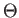
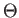

The Aanderaa-Karp-Rosenberg conjecture states that all non-trivial monotone graph properties are evasive in the classical deterministic setting. A natural extension of the Aanderaa-Karp-Rosenberg Conjecture to quantum computing would conjecture all non-trivial monotone graph properties have the same query complexity, or at least the same asymptotic query complexity in the bounded error setting. To see that no such extension can hold, observe that the following non-trivial monotone graph properties can be determined by running the algorithms for OR, AND, and MAJORITY respectively:
Beals et al. provide an O(V) oracle query algorithm for computing
the AND or OR of an O(V2) bit oracle string in the bounded error
setting [2], and we have a lower bound of
 (V) oracle queries required to compute them from Section
2.6. We have a lower bound of
(V) oracle queries required to compute them from Section
2.6. We have a lower bound of
 (V2) oracle
queries required to compute the MAJORITY of an O(V2) bit oracle
string from Section 2.6. Thus some decision problems for
non-trivial monotone graph properties require (V) oracle
queries and others
(V2) in the bounded error setting, and
there is no extension of the Aanderaa-Karp-Rosenberg conjecture to the
quantum bounded error setting. This does not come as a complete
surprise, as there are quadratic gaps known between the classically
evasive symmetric functions from Chapter 2 in the
quantum bounded error setting. More disappointing is that there are
graph properties for which the quantum bounded error setting can
provide only constant speedup over the classical case.
(V2) oracle
queries required to compute the MAJORITY of an O(V2) bit oracle
string from Section 2.6. Thus some decision problems for
non-trivial monotone graph properties require (V) oracle
queries and others
(V2) in the bounded error setting, and
there is no extension of the Aanderaa-Karp-Rosenberg conjecture to the
quantum bounded error setting. This does not come as a complete
surprise, as there are quadratic gaps known between the classically
evasive symmetric functions from Chapter 2 in the
quantum bounded error setting. More disappointing is that there are
graph properties for which the quantum bounded error setting can
provide only constant speedup over the classical case.